Marketplace is a key feature in the THPK Help WeChat Mini-Program that supports college students to exchange information with semi-strangers on campus and people living around their colleges.
PROJECT TYPE
Business Driven Design
TIMELINE
Launched in September 2018
Redesigned in June 2019
TOOLS
Paper and Pen, Figma, Principle
Zeplin, Miro, Iconfont, Trello
Design Problem
College students in China are vulnerable when exchanging information and dealing online.
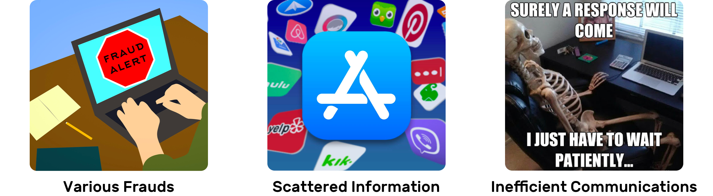Key Insights & Design Outcome
People feel tired of pictures, direct messages from strangers, endless disturbing.
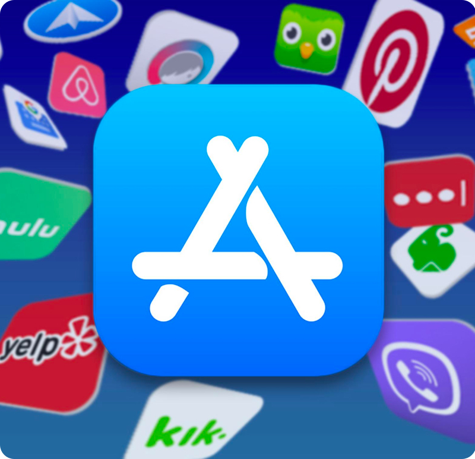Marketplace is a feature in THPK Help Wechat Mini-Program.
It's a mobile-end information aggregator that provides on-campus and off-campus information sharing, including: helping on problems, selling and exchanging second-hand items, dating and making friends, recruiting part-time job candidates, sharing topics, organizing activities and events, for students who are studying in THU and PKU, which are the most famous universities in China and both located in the WU DAO KOU area in Beijing.
01
Categorize, Post And Spread Information
Building awareness and recognition
By showing 5 category badges on posts and as filters, you could easily get known about the mechanism of how posts are being organized and showed.
And when you are writing a new post, you can quickly tag your post with a category then post it quickly.
You could share your post with friends or chat groups via WeChat integration.


02
Find And Reply A Post
No matter by browsing the posts list, using filters or searching, you could easily locate the posts fit your interests.
Posters could verify their student id to get a school badge on their username. You can filter your search results by the id of the poster.
Respondents could start a conversation by tapping the reply button to send a mssage template.
03
Turn A Conversation To Private
Notification: By the integration in WeChat, you will be notified by our service platform's in-app message when there is an update on your post. So you don't need to keep looking at your post to track comments.
The reply bar also supports sharing poster's WeChat ID to a certain respondent to discuss further, private details in WeChat.
The shared WeChat ID is only visible and can be copied by poster and that respondent.
04
Mute A Post After Solved
After solved, you could also mark it as a SOLVED status to get rid of unnecessary late inquiry.
My role was the design lead in a product development team.
I worked closely with 6 full stack engineers to develop a WeChat Mini-Program product to better support the on-campus information exchanging for Chinese college students.
The Product THPK Marketplace Wechat Mini-Program has launched for two years and is continuously getting 1000 DAU.
EMPATHIZE
Background

Here is a diagram showing how this product works in WeChat.
No effective and centralized platform for college students to securely spread their information with semi-strangers.
WeChat is definitely the most popular social media in China but it has a relatively closed social network that not supporting college students to communicate and deal with people who are not in their current friend list.
Current Entry Point
THPK Help's service account is the main entry point for followers. Users could share information by creating a post. Every day at 9 pm, our operational people pushed an article to followers with today's featured posts in a more manual way. Then people could land to a post detail page and exchange contact info with the poster on the H5 page.
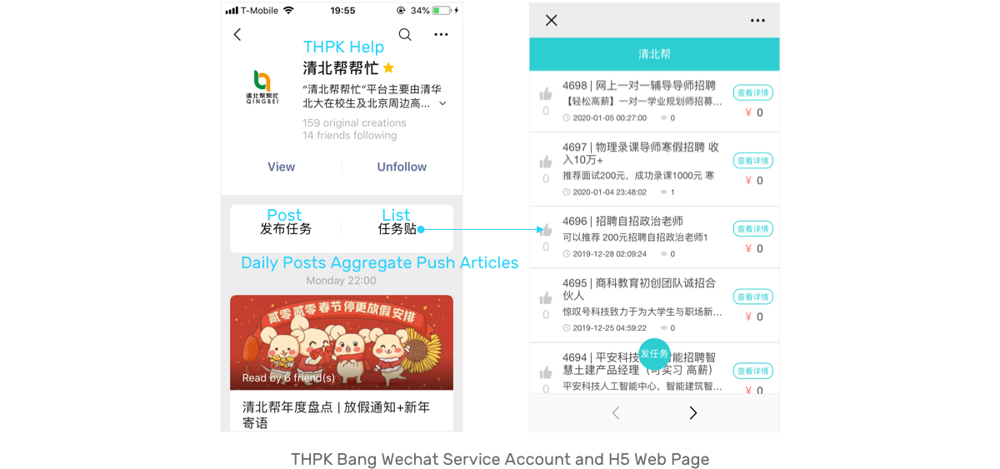Goal
Build a online community for colleges students through information sharing.
We tried to start our business by providing peer-to-peer campus life information services among the top 2 universities in China. And this model is highly-scalable in other 1 tier cities like Shanghai, Guangzhou, Chengdu, and Wuhan.
Learning from people's words and actions
Qualitative Research:
Interceptions(at on-campus cafeterias, dining halls, student centers, local grocery stores, and banks), semi-structured interviews with users, focus-group with observing in using the existing H5 product.
Quantitative Evaluation:
Run SQL in database, excel pivot chart and keywords mapping

College students are affected by consumerism, having short term loans, buying and storing useless items, living in an otaku lifestyle and having lower social skills.
DEFINE
Pain Points
While people are using our current product, they feel like:

Our old design is overwhelming, plain, disordered.
Learning from competitors
While exchanging information on other mobile platforms, people perceive the compelling aspect, but concern about:

Our competitors are overwhelming, mixed, time-consuming.
Key Concerns
1. Users' Unknown Identification
But they are not specifically focusing on college students who have less social experience on dealing with financial issues, screening and making agreements. This might brings the potential of fraud, advertisements, and third party agencies' involvement and disturbance.
2. Picture-based Post
Most of the social media platforms are based on the images uploaded by the users to make the posts to be credible. At the same time, this strategy makes a product feel visually heavy with overload information.
Design Goal

Based on the market landscape and competitor's point of view, we defined the goal of our service is providing a more community-like campus life information aggregator.
Personas & Current Journey
When they want to exchange information, they are
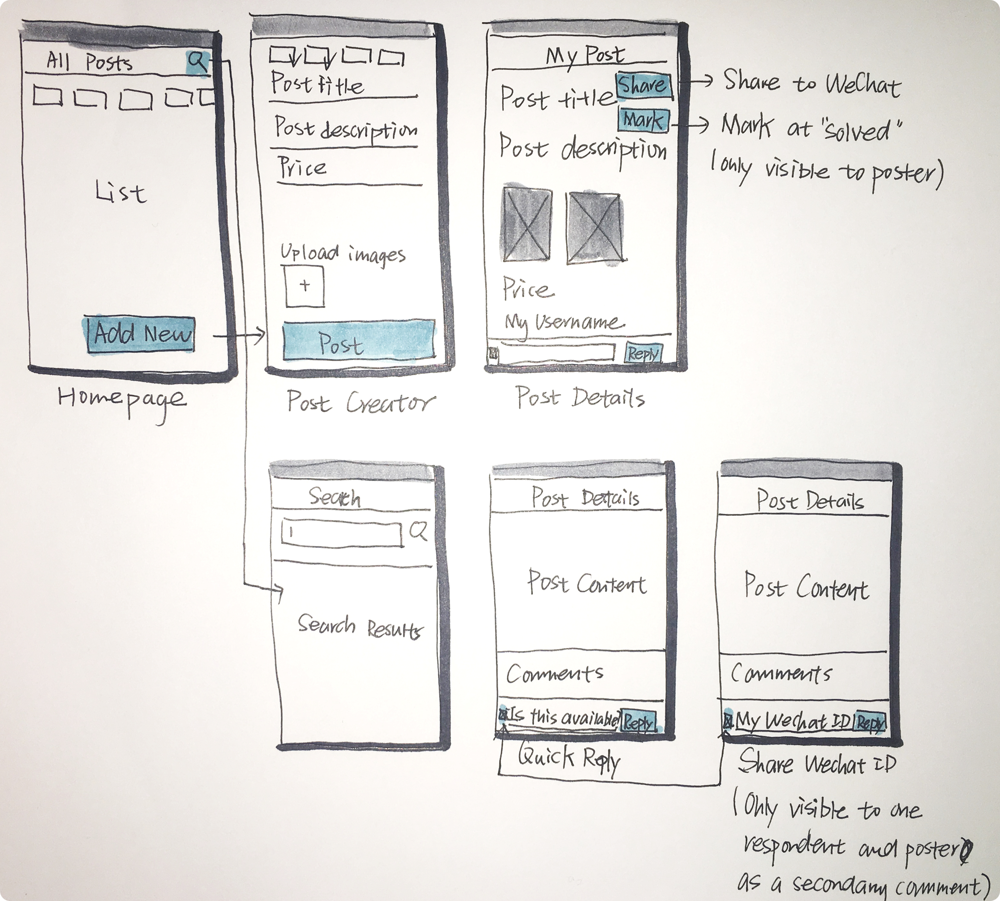 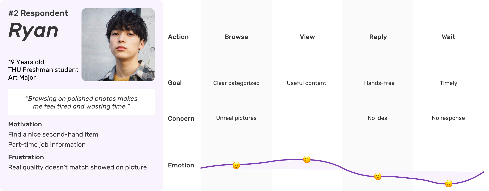By synthesizing two user journey maps together, I got a simplified user flow.
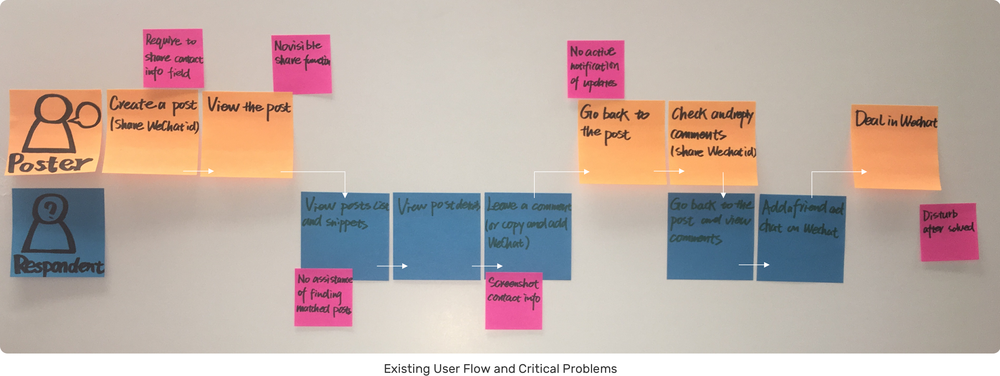Design Principles
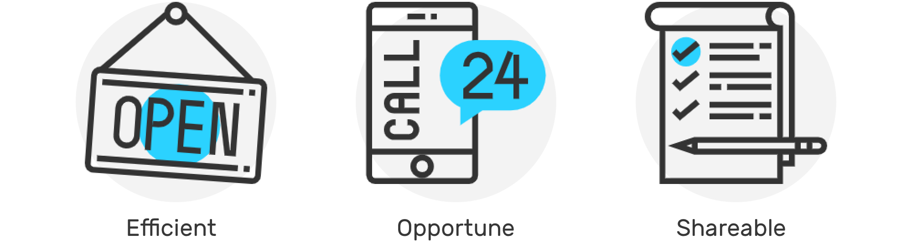IDEATE
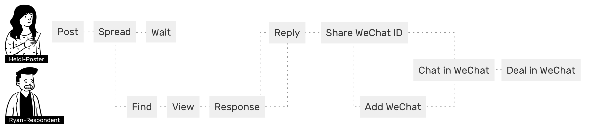Design Challenge 1
How to help match posts with interests?

Direction 1: Topics
Ease of finding matched posts
Implications:
· Categorize posts based on current posts data
· Search function
· Provide different dimensions filters and shortcuts to help user match posts with their interests

Direction 2: Users
Building a trustworthy university related community
Strategy:
· Show user's identification by a verification system
Categorize Information
Design 1
Before fill content, single selection
Design 2
After fill content, multiple tags

Group Same Category Posts
Design 1
1. Potential whitespace(5 main categories)
2. Page shifting back and forth
3. More immersive but is not our goal
Design 2
1. A sticky top filter, clear, focused
2. An "All" option, mixed list with all category posts
Accurately Search by Keywords
Searching is:
High effort: know Exactly what they want, type in manually
Low response: Feasibility of matching keywords with high speed
We don't encourage people to search at the first time. I still keep the "Search" function on the first screen function but give it a lower priority by showing as a button.
Filter Posts by Poster's University ID
Design 1
Add one more layer of filter will bring effort and make people think about it and slowdown
Serve as a sticky top bar will make the visible area smaller
Design 2
If users have a clear idea of what they are looking for, filter by poster's id would be more useful in the "searching" scenario
Posts List/Homepage Layout
Design 1
1. More focused
2. Smooth scrolling
3. No page shifting
Design 2
1. Easily view the several latest posts in each category
2. Vertical and horizontal scrolling together
Design Challenge 2
How to build a responsive community
Like
Design 1
Low effort user interaction will make noise that lead people to want to have a look of information not valuable to them
Design 2
Make the priority of making an impact lower
Share to Group/Chat
Design 1
comparing to "reply", "Share" is not a prioritized feature
Design 2
More direct and visible
Design Challenge 3
How to connect people in an opportune manner?
Direction 1: Keeping the starting and shareable conversations in our app
Strategy:
· Encourage user interaction and reply in WeChat Mini-Program rather than in Wechat at the starting in touch stage
· Push notification from service account to user when there is a unread comment

Quick Reply+ Wechat ID
Design 1
A very low effort reply will generate too much noise information
Design 2
A comments section in post details page allow people to read and consider then reply with various message templates
Post Availability
Design 1
A pre-set expiration date may make people think too much and feel concerned, then stuck or drop the creating process
Design 2
Give people the flexibility to end their posts, so they won't be disturbed

Other Considerations
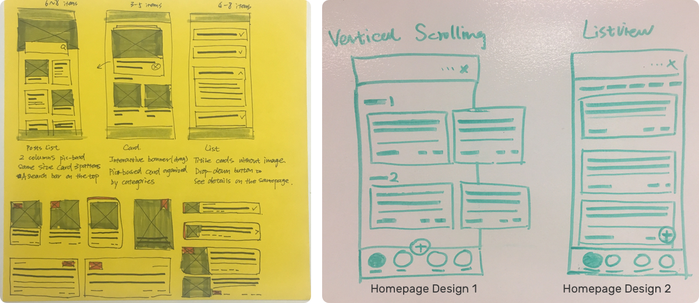
The design goal is to keep people focusing on reading through every post. I explored these homepage design concepts.
1. Quickly scrolling down will miss most of the useful content;
2. We don't have that many posts for people to browse. The older posts will be exposed to people sooner and make the conversion lower;
3. Picture-based posts will distract people, so they spend more time in this app, ignore their communication in WeChat, and consume more wireless plan balance. These are all negative effects.
After communicated with the operational team, we decided to move the listview content card design forward.
Because of our first round research results and goal of building a simple and swift product.
User Flow Chart
When people are using THPK Help, their foot print will be looking like:
More specifically, it's like

WIREFRAMES
User Narrative and Stories
Let meet Heidi and Ryan
Poster
Heidi is a senior EE student who are going to graduate this Spring from Tsinghua University. Now she has already get a offer and start to work as a part time intern. So she is ready to relocated to her new apartment.
Respondent
Ryan is a RA student who has already got an graduate student admission at Peking University EE department. He wants to rent an apartment near Wudaokou area.
Their story starts from:
Heidi wants to quickly sublet her off campus housing to trustworthy people, ideally students. She plans to sublet for 350$ a month and she has two pictures for her apartment. Ryan wants to get a sublet near Tsinghua University.
Mid-fi and User Flow
9:00 A.M. Heidi creates a new post

9:03 A.M.Ryan tries to find a post matched with his interests

9:04 A.M. Ryan gets a post he's interested in

9:06 A.M. Heidi waits for a deal

9:09 A.M. Ryan sees Heidi's WeChat

10:59 A.M. Heidi deals with Ryan
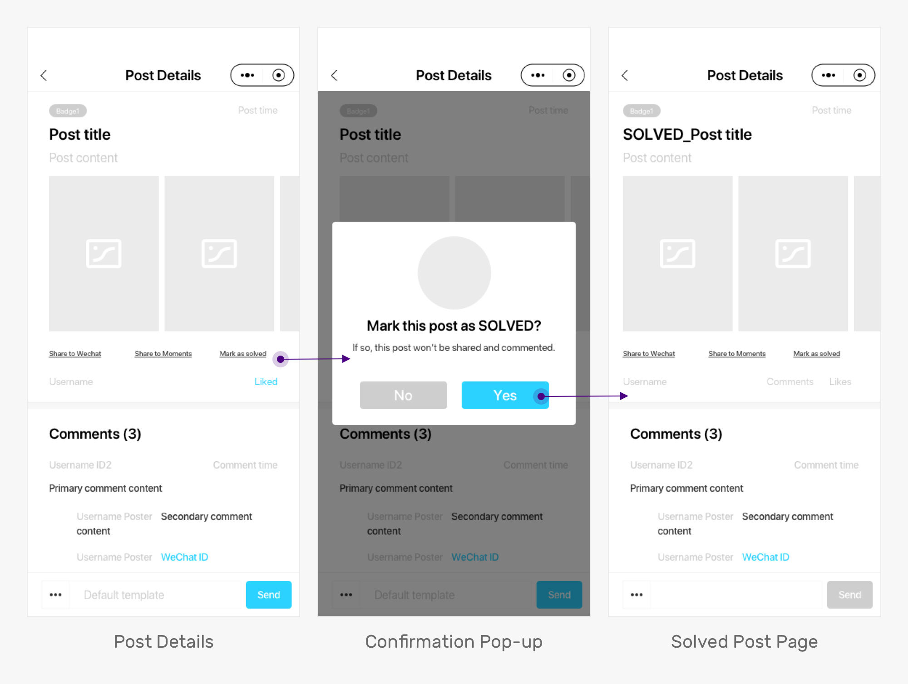Then the information will be structured and aggregated in this way:
| Information Architecture

TEST
In-person Tasks-driven Testing and Observation
Post
Think about one problem or a thing you are currently dealing with and could be solve by using THPK Help, and publish a post for it.
Share
Share the post you created to your chats or moments (Social media in WeChat)
Reply
Get to know your post has updated comments and replied to the comments.
Mark as solved
You have solved your problem and don’t want to disturb later
Feedback
1. Category and badges design consistency
Use the same color and design pattern to build recognition of the system
2. Information discoverability
Expose the whole title on the homepage post's card to help decide if want to view a more specific description or not
Visual Design Exploration Based on
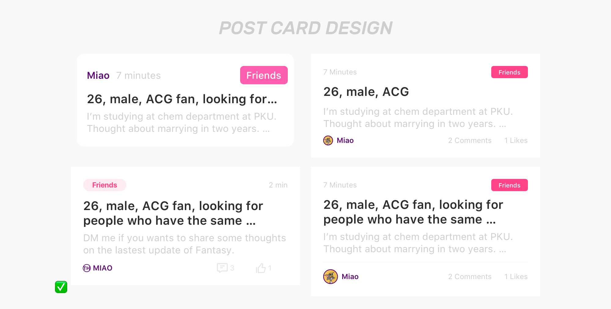
DESIGN
UI Design Guidelines
Keywords:
Swift, Easy to Use, Simple and Clean, Responsive, Various, Stable.
Final Outcome
THPK HELP Marketplace
1. Supports more accessible and trustworthy campus life information exchanging
2. Has an open community and help to upgrade communication to private after students id verification
3. Provides a simple, swift and responsive experience
Key Metrics
As a Mini-Program, since it embedded in WeChat, the key metrics are a bit different from native mobile apps.
Our product works and helps, if we see:
Design Goal
1. Users see THPK Help posts are useful and helpful
User Actions
Users open THPK Help frequently
Metrics
DAU and source(Attribution), like Wechat articles, inside our service account, posts sharing, quick mini-program shortcut, interaction notifications
2. THPK Help is recognized by more people
More first-time users open THPK Help
Daily and monthly user growth rate
3. Users interact well in THPK Help
Users comment in THPK Help post during a certain period of time after posting
Daily and monthly retention rate and churn rate
Reflections and Future
Now we have launched our product on the WeChat platform and had more than 1000 users to use every day. And our next step is to optimize the main function like issue mission, topic and activity and at the same time to fix some bugs which are critical for the user experience.